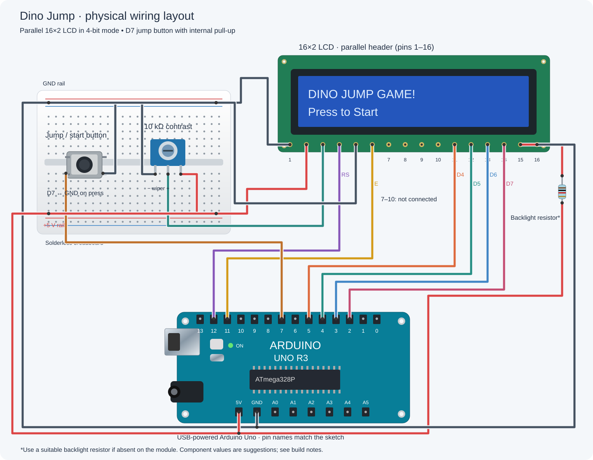

Arduino: Dino Jump
A connection guide based on the project’s Arduino sketch and build photo. Signal pins match the code; suggested component values and details hidden in the photo are called out below.
AI assistance: This wiring diagram was created using artificial intelligence, based on the project’s code and reference photograph.

Pin connections
| Pin / source | Connect to |
|---|---|
| D12 | LCD pin 4 · RS |
| D11 | LCD pin 6 · Enable |
| D5 | LCD pin 11 · D4 |
| D4 | LCD pin 12 · D5 |
| D3 | LCD pin 13 · D6 |
| D2 | LCD pin 14 · D7 |
| D7 | Pushbutton → GND when pressed |
| 5 V | LCD pin 2 · VDD; contrast pot outer lug |
| GND | LCD pin 1 · VSS; pin 5 · R/W |
| GND | Contrast pot other outer lug; button |
| Pot center lug | LCD pin 3 · VO (contrast) |
| 5 V | Backlight resistor → LCD pin 15 · A |
| GND | LCD pin 16 · K (backlight cathode) |
Build notes
- The sketch uses
LiquidCrystal lcd(12, 11, 5, 4, 3, 2)in 4-bit mode. LCD pins 7–10 (D0–D3) stay unconnected. - Connect D7 and GND to opposite switched sides of the pushbutton. The sketch uses
INPUT_PULLUP, so pressing the button reads LOW; no external pull-up resistor is needed. - The photo shows a parallel 16×2 LCD, a pushbutton, and a contrast potentiometer. A 10 kΩ potentiometer is a suggested contrast control; its value is not readable in the image.
- Connect the backlight through a suitable series resistor if the LCD does not include one. A 220 Ω resistor is a typical starting point; confirm the LCD module’s backlight requirements. The photo does not establish the backlight resistor value.
- Use the LCD’s printed pin labels to identify pin 1. Join the breadboard ground rails and connect them to the Uno GND.
Reference sketch: DinoJump.ino. Disconnect USB power while changing connections.